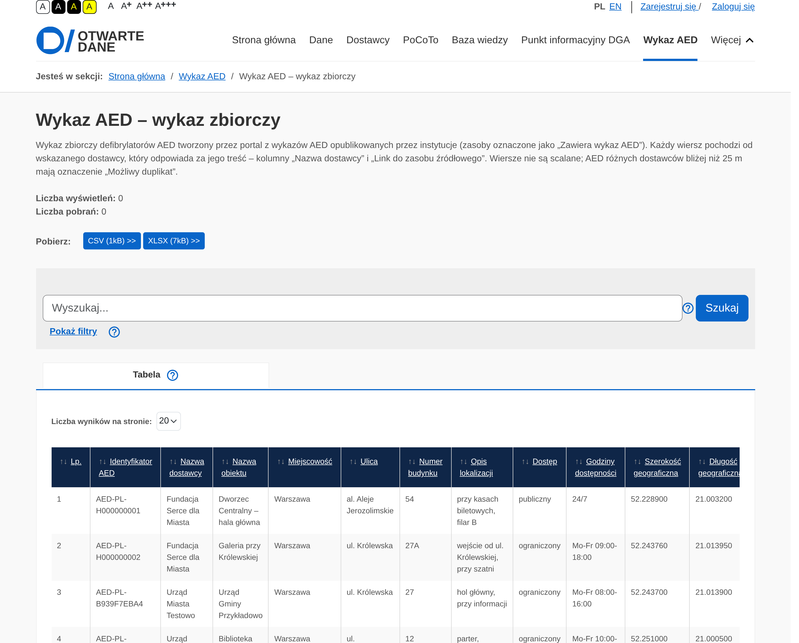
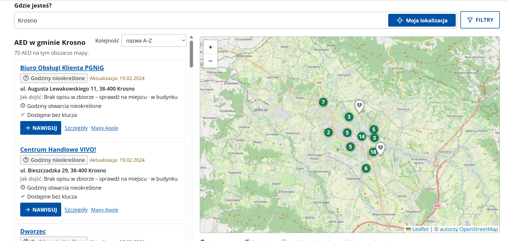
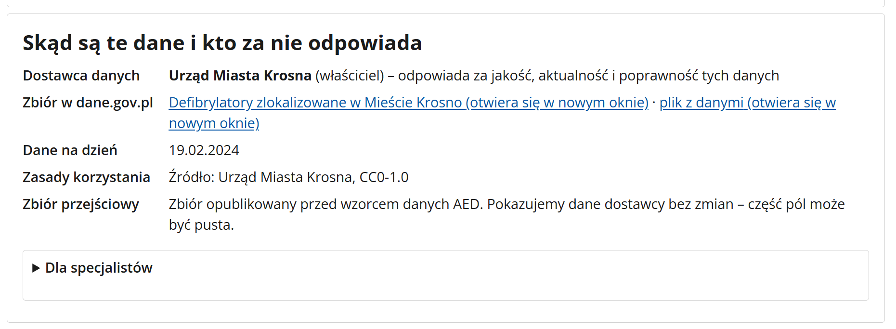
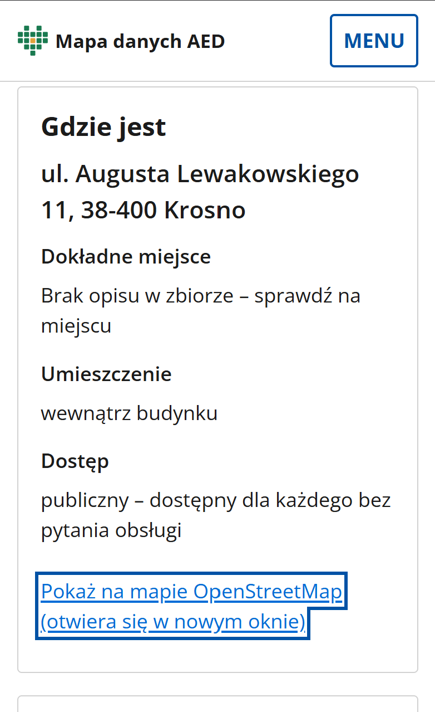

„Dane prosto z serca”
HackNation 2026 · Misja AED – dane na ratunek · zespół MKS · stolik 15f
Wykaz AED w dane.gov.pl
Jedna lista defibrylatorów od wielu dostawców – zbudowana w kodzie portalu dane.gov.pl, tak jak portal już dziś buduje wykaz chronionych danych (DGA).
1. Wykaz AED w portalu
Zmiana w kodzie dane.gov.pl: pole przy zasobie, walidacja, nocne łączenie, API.
2. Mapa danych AED
Strona, która czyta wykaz: najbliższe AED, dostawca i źródło przy każdym punkcie.
3. Akcja „AED w danych”
Logo, hasło i księga znaku dla instytucji, które mają AED i jeszcze go nie publikują.
Repozytorium: github.com/Serafin21/misja-aed · jury: INSTRUKCJA_DLA_JURY.md
Problem
AED w danych są – ale nikt za nie nie odpowiada
18 297
AED w Polsce w OpenStreetMap – wpisują je wolontariusze, bez właściciela danych
3 219
z 18 347 znanych AED ma datę sprawdzenia z ostatnich 12 miesięcy
351
z 2 479 gmin nie ma w danych ani jednego AED
- Kilka samorządów publikuje już AED w dane.gov.pl (Krosno, Przemyśl, Marki, Warszawa) – każdy w innym układzie kolumn.
- Mentorzy MC: „dane są rozproszone i niezweryfikowane – nikt nie bierze za nie odpowiedzialności”; „potrzebny jest dostawca, który weźmie odpowiedzialność za zbiór”.
Wniosek: potrzebna jest lista, w której każdy wiersz ma dostawcę – a portal tylko łączy listy, niczego za nikogo nie poprawiając.
Źródło liczb: docs/tech/LICZBY.md (eksport AED OpenStreetMap Polska, granice gmin PRG – GUGiK, zbiory dane.gov.pl; 21.11.2026)
Jak podeszliśmy do zadania
Od zasad portalu do zmiany w jego kodzie – 6 kroków
- Zasady dane.gov.pl. Standard techniczny, instrukcja XML harvestera (COI), DCAT-AP-PL – na nich oparliśmy format i walidację.
- Wzorcowy zakres danych. 44 pola AED (24 wymagane), m.in. godziny w zapisie maszynowym, szafka zamknięta i instrukcja dostępu, data weryfikacji – jeden plik, z którego powstają XLSX, słownik, JSON Schema, CSVW.
- Prawdziwe dane. Wczytaliśmy całą Polskę z OpenStreetMap i zbiory samorządów z dane.gov.pl – i policzyliśmy, jak stare są dane.
- Model ról. Po rozmowie z mentorami: publikuje dostawca, który odpowiada; portal łączy, nie poprawia; zgłoszenia mieszkańców wracają do dostawcy (
docs/MODEL_ROL.md).
- Kod portalu. Zaimportowaliśmy kod dane.gov.pl jako pierwszy commit i dobudowaliśmy „Wykaz AED” dokładnie wzorem istniejącego wykazu DGA – zamiast pisać osobny system.
- Strona odczytu i akcja. Mapa danych AED czyta wykaz zbiorczy; akcja „AED w danych” zaprasza instytucje tam, gdzie mapa pokazuje luki.
Szczegóły decyzji: docs/MODEL_ROL.md, portal/README.md, docs/tech/COMPLIANCE.md
Rozwiązanie
Jak powstaje Wykaz AED – przepływ w portalu
1Dostawca publikujegmina, szpital, firma, fundacja – plik CSV/XLSX z 44 kolumnami w swoim zbiorze
→
2„Zawiera wykaz AED”pole przy zasobie w panelu; w XML harvestera: containsAedList
→
3Portal sprawdzakolumny, pola wymagane, współrzędne w Polsce, TERYT, jeden wykaz na instytucję
→
4Docelowo co noc o 3:40zadanie łączy wykazy w „Wykaz AED – wykaz zbiorczy” (CSV + XLSX); na serwerze dane.gov.pl jeszcze go nie ma
→
5API i mapaGET /aed-aggregated → Mapa danych AED i każda inna aplikacja
Bez scalania wierszy
Każdy wiersz wykazu zbiorczego ma nazwę dostawcy i link do zasobu źródłowego (15 czytelnych kolumn; pełne 44 pola zostają u dostawcy). Dwa AED różnych dostawców bliżej niż 25 m dostają tylko oznaczenie „Możliwy duplikat” – decydują dostawcy.
Ten sam mechanizm co DGA
Portal ma już wykaz chronionych danych: pole contains_protected_data, walidację, zadanie create_main_dga_resource_task i /dga-aggregated. Wykaz AED powtarza każdy z tych elementów – zmiana w portalu, nie osobny system.
Kod: portal/backend/mcod/resources/ · opis i mapa „DGA → AED” z numerami linii: portal/README.md
Dowód 1 · tabela Wykazu AED w portalu dane.gov.pl
Wykaz AED w portalu – obok „Punkt informacyjny DGA”

Ten sam mechanizm co DGA, inny zakres kolumn
Strona zbudowana jak wykaz chronionych danych: !aed → !list-aed → !table, tabela zasobu z /aed-aggregated. Zamiast kolumn DGA – 15 czytelnych: Identyfikator AED, Nazwa dostawcy, Nazwa obiektu, adres, Dostęp, Godziny, współrzędne, Data weryfikacji, Link do zasobu źródłowego, Możliwy duplikat.
Dwa sposoby zasilenia
Ręcznie: Urząd Miasta Testowo wgrał plik w panelu i zaznaczył „Zawiera wykaz AED”.
Automatycznie: Fundacja Serce dla Miasta – harvester XML z <containsAedList>true</containsAedList>. Dwa AED 7 m od siebie: „Możliwy duplikat”, bez scalania.
Prawdziwy frontend i backend portalu (mcod-frontend 3.5.2, mcod-backend 2.62.3) uruchomione lokalnie 22.11.2026 · kod: portal/frontend/src/app/pages/aed-information-point/, portal/backend/mcod/resources/aed_*.py
Dowód 2 · zgodność z zasadami portalu
Zmiana w kodzie dane.gov.pl, nie obok niego
git log --oneline -- portal/ (od najstarszego)
b229557 Import: kod źródłowy portalu dane.gov.pl
(mcod-backend 2.62.3) – bez zmian
1464bf3 Wykaz AED: model – Resource.contains_aed_list
068b654 Wykaz AED: aed_constants.py – 44 kolumny
48fb8da Wykaz AED: walidacja pliku
3184384 Wykaz AED: pole w formularzu panelu
9bb5d27 Wykaz AED: XML – containsAedList (XSD 1.14)
e5f4f91 Wykaz AED: create_main_aed_resource_task
5a214fd Wykaz AED: GET /aed-aggregated
67ce118 Wykaz AED: testy (wzorem testów DGA)
… + README, środowisko lokalne, poprawki
Pierwszy commit to oryginalny kod portalu; każdy następny to nasz przyrost (zalecenie mentora MC).
| Element | DGA (oryginał portalu) | Wykaz AED (nasz przyrost) |
|---|
| Pole zasobu | contains_protected_data | contains_aed_list |
| Kolumny | DGA_COLUMNS | AED_COLUMNS (44) |
| Walidacja | validate_dga_file_columns | validate_aed_file |
| Wykaz zbiorczy | AggregatedDGAInfo | AggregatedAEDInfo |
| Zadanie nocne | create_main_dga_resource_task | create_main_aed_resource_task |
| API | /dga-aggregated | /aed-aggregated |
Pełna tabela z numerami linii: portal/README.md, „Gdzie wzór DGA, gdzie Wykaz AED”.
Sprawdź: git log --oneline -- portal/ · git diff b229557 HEAD -- portal/backend · pochodzenie kodu: portal/IMPORT.md
Dowód 3 · zasilanie ręczne w panelu
Dostawca zaznacza „Zawiera wykaz AED” – portal sprawdza plik
Panel dane.gov.pl: nowe pole przy zasobie (wzorem „Contains protected data list” – DGA) · forms.py

Plik z błędami nie przechodzi – błędy wiersz po wierszu · aed_utils.py

Portal dane.gov.pl z naszą zmianą uruchomiony lokalnie 22.11.2026 (panel, API, Celery, Elasticsearch) · testy Wykazu AED: 28/28
Dowód 4 · wykaz zbiorczy i API
Co noc jeden „Wykaz AED – wykaz zbiorczy” i /aed-aggregated
Zadanie create_main_aed_resource_task (3:40, kroki jak create_main_dga_resource_task) zebrało wykazy 2 instytucji w zasób portalu w zbiorze Ministerstwa Cyfryzacji: CSV + XLSX, stały schemat tabeli, znak umowny „-”.
Każdy wiersz: nazwa dostawcy i link do jego zasobu; AED 9 m od siebie u różnych dostawców – „Możliwy duplikat”, bez scalania.
Zasilanie automatyczne: element containsAedList w XML harvestera (propozycja XSD 1.14) – kod i test jednostkowy.
GET /aed-aggregated – odpowiedź API uruchomionego portalu

Dowód 5 · wzorcowy zakres danych
44 pola – jeden wzór dla wszystkich dostawców
- Pola, których brakuje dziś w bazach, a decydują o ratunku: godziny dostępności (zapis maszynowy → „otwarte teraz”), szafka zamknięta + instrukcja dostępu, data i metoda weryfikacji.
- Jedna definicja → XLSX, słownik danych CSV, JSON Schema, metadane CSVW.
- Te same 44 kolumny sprawdza portal (
aed_constants.py).
deliverables/zakres_danych/wzorcowy_zakres_danych_AED_v0.9.xlsx – arkusz „Zakres danych” (fragment)
| Lp. | Nazwa pola | Etykieta | Typ / format | Obowiązk. |
|---|
| 1 | id_aed | Identyfikator AED | tekst · AED-PL-… | wymagane |
| 3 | nazwa_obiektu | Nazwa obiektu | tekst · maks. 200 | wymagane |
| 18 | szerokosc_geograficzna | Szerokość geograficzna | liczba · 49–54,9 | wymagane |
| 20 | dostep | Dostępność dla osób postronnych | słownik | wymagane |
| 21 | godziny_dostepnosci | Godziny dostępności | opening_hours | wymagane |
| 23 | szafka_zamknieta | Szafka zamknięta | true / false | wymagane |
| 24 | instrukcja_dostepu | Instrukcja dostępu | tekst · maks. 250 | zalecane |
| 39 | data_weryfikacji | Data weryfikacji | yyyy-mm-dd | wymagane |
Pliki: deliverables/zakres_danych/, docs/schema/ · przykładowy pakiet dostawcy (CSV + XML zgodny z XSD 1.13): deliverables/pakiet_dostawcy_przyklad/
Dowód 6 · przykładowy odbiorca wykazu – Mapa danych AED
Mieszkaniec widzi najbliższe AED i kto za nie odpowiada

„Znajdź AED” – gmina Krosno: lista i mapa, godziny, szafka, Nawiguj.

Karta AED: dostawca Urząd Miasta Krosna, zbiór w dane.gov.pl, data danych, „zbiór przejściowy”.

Telefon (390 px).
- Oznaczenia: Do sprawdzenia punkt z OpenStreetMap, poza wykazem · Prototyp – nieopublikowane w dane.gov.pl AED dodane w aplikacji.
- Dostępność: axe-core na 15 ekranach – 0 naruszeń WCAG 2.2 A/AA; bez przewijania w poziomie od 320 px; pełna obsługa klawiaturą (
docs/a11y/raport.md).
Kod aplikacji: src/ui/ (React) i src/api/ (FastAPI) · testy aplikacji: 112 passed (pytest) · uruchomienie: INSTRUKCJA_URUCHOMIENIA.md
Akcja promocyjna dla dostawców danych
„AED w danych” · Dane prosto z serca
Masz AED? Udostępnij je na dane.gov.pl · #AEDwDanych
- Znak: serce z komórek arkusza danych – każda komórka to jeden wiersz, czyli jeden defibrylator; bursztynowa komórka w środku to „Twoje AED”, którego jeszcze brakuje.
- Do kogo: instytucje, które mają AED, a nie mają wykazu w dane.gov.pl – najpierw gminy, w których mapa pokazuje luki.
- Księga znaku (9 stron): koncepcja, wersje, kolory z kontrastem WCAG, pole ochronne, minimalna wielkość, niedozwolone użycia; na ostatniej stronie każdy wariant logo do pobrania (SVG, PNG, JPG, PDF).
- Logo służy akcji – nie jest marką aplikacji ani tej prezentacji.
Pliki: brand/ksiega_znaku.pdf, brand/logo/{svg,png,jpg,pdf}/ (48 plików), brand/haslo.txt
Opis funkcjonalności · kroki użytkowników
Kto co robi
Dostawca (gmina, szpital, firma, fundacja)
- Pobiera szablon (44 kolumny) ze strony „Dla instytucji”.
- W panelu dane.gov.pl: swój zbiór → Dodaj zasób → plik.
- Zaznacza „Zawiera wykaz AED” = Tak → Zapisz.
- Poprawia wiersze z komunikatu walidacji.
- Następnego dnia jego AED są w wykazie zbiorczym i na mapie. Poprawka = nowa wersja pliku.
Mieszkaniec
- „Znajdź AED” → adres albo „Moja lokalizacja”.
- Najbliższe AED otwarte teraz, z odległością.
- Karta: jak się dostać, szafka, dostawca i źródło danych.
- „Nawiguj” – trasa pieszo.
- „Zgłoś problem z tym AED” – zgłoszenie trafia do dostawcy, dane się nie zmieniają.
Ministerstwo Cyfryzacji
Nie zmienia danych dostawców. Prowadzi wzorzec i zbiór „Wykaz AED – wykaz zbiorczy”, patrzy na luki w gminach i kieruje tam akcję „AED w danych”.
Programista / służby
GET /aed-aggregated → link do CSV albo XLSX wykazu zbiorczego; każdy wiersz z dostawcą i linkiem do źródła.
Ograniczenia · zakres AI · co dalej
Co jeszcze nie jest gotowe
Ograniczenia prototypu
- Portal z Wykazem AED uruchomiliśmy lokalnie (panel, API, Celery); publicznej strony dane.gov.pl, która pokazuje wykaz jako tabelę, nie uruchamialiśmy (osobne repozytorium). Harvester XML z
containsAedList – kod i test jednostkowy, bez przebiegu na uruchomionym portalu.
- Aplikacja w prototypie czyta zbiory fikcyjnych dostawców i 3 prawdziwe zbiory samorządów sprzed wzorca (Krosno, Przemyśl, Marki – 50 AED); wykaz zbiorczy portalu czyta po ustawieniu
PORTAL_API.
- Edycja AED przez administratora aplikacji to tryb pokazowy prototypu, docelowo wyłączony – nie zmienia wykazu zbiorczego.
- Zgłoszenia mieszkańców symulowane w aplikacji (docelowo komentarze do zasobu w portalu); logowanie testowe (docelowo login.gov.pl i 2FA).
- XSD 1.14 to propozycja; terminy i próg 25 m – do potwierdzenia z MC.
Zakres użycia AI (§2 ust. 8 regulaminu)
Claude i Claude Code: generowanie kodu, testów i tekstów, wersja wektorowa logo i księga znaku według koncepcji zespołu. Zespół: wybór i analiza problemu, model ról, wzorzec danych, koncepcja znaku, nazwa i hasło, decyzje i przegląd. Szczegóły: docs/AI_USAGE.md.
Co dalej
- Przegląd przyrostu w kodzie z zespołem dane.gov.pl.
- Pilotaż z jedną gminą jako pierwszym dostawcą wykazu.
- Akcja „AED w danych” w gminach bez AED w danych.
Zespół MKS · repozytorium github.com/Serafin21/misja-aed · INSTRUKCJA_DLA_JURY.md · INSTRUKCJA_URUCHOMIENIA.md